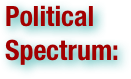
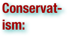
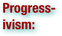
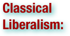
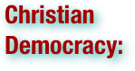
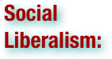
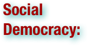
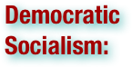

Modern Ideologies: Terms
Please scan the terms to find what you are looking for - they are not in order!
.pdf (. . . )


An ideology is a set of ideas that constitutes one's goals, expectations, and actions. An ideology can be thought of as a comprehensive vision, as a way of looking at things, as in common sense and several philosophical tendencies, or a set of ideas proposed by the dominant class of a society to all members of this society (a "received consciousness" or product of socialization). The main purpose behind an ideology is to offer either change in society, or adherence to a set of ideals where conformity already exists, through a normative thought process. Ideologies are systems of abstract thought applied to public matters and thus make this concept central to politics. Implicitly every political tendency entails an ideology whether or not it is propounded as an explicit system of thought. It is how society sees things. (wikipedia.org)

A Political Ideology is a certain ethical set of ideals, principles, doctrines, myths, or symbols of a social movement, institution, class, or large group that explains how society should work, and offers some political and cultural blueprint for a certain social order. A political ideology largely concerns itself with how to allocate power and to what ends it should be used. Some parties follow a certain ideology very closely, while others may take broad inspiration from a group of related ideologies without specifically embracing any one of them. Political ideologies have two dimensions: 1) Goals - how society should work (or be arranged) and 2) Methods - the most appropriate ways to achieve the ideal arrangement. An ideology is a collection of ideas. Typically, each ideology contains certain ideas on what it considers to be the best form of government (e.g. democracy, theocracy, etc.), and the best economic system (e.g. capitalism,socialism, etc.). Sometimes the same word is used to identify both an ideology and one of its main ideas. For instance, "socialism" may refer to an economic system, or it may refer to an ideology which supports that economic system. Ideologies also identify themselves by their position on the political spectrum (such as the left, the center or the right), though this is very often controversial. Finally, ideologies can be distinguished from political strategies (e.g.populism) and from single issues that a party may be built around (e.g. legalization of marijuana). (wikipedia.org)


A political spectrum is a way of modeling different political positions by placing them upon one or more geometric axes symbolizing independent political dimensions. Most long-standing spectra include a right wing and left wing, which originally referred to seating arrangements in the 18th century French parliament. According to the simplest left-right axis, communism and socialism are usually regarded internationally as being on the left, opposite fascism and conservatism on the right. Liberalism can mean different things in different contexts, sometimes on the left, sometimes on the right. However, researchers have frequently noted that a single left-right axis is insufficient in describing the existing variation in political beliefs, and often include other axes. Though the descriptive words at polar opposites may vary, often in popular biaxial spectra the axes are split between cultural issues and economic issues, each scaling from some form of individualism (or government for the freedom of the individual) to some form of communitarianism (or government for the welfare of the community). In this context, the left is often considered individualist (or libertarian) on social/cultural issues and communitarian (or populist) on economic issues, while the right is often considered communitarian (or populist) on social/cultural issues and individualist (or libertarian) on economic issues. (wikipedia.org)


A political party is a political organization that typically seeks to influence government policy, usually by nominating their own candidates and trying to seat them in political office. Parties participate in electoral campaigns, educational outreach or protest actions. Parties often espouse an expressed ideology or vision bolstered by a written platform with specific goals, forming a coalition among disparate interests. (wikipedia.org)

Excluding differences caused by the dependencies of the term's meaning upon context, geography and philosophy, patriotism is a devotion to one's country. In a generalized sense applicable to all countries and peoples, patriotism is a devotion to one's country for no other reason than being a citizen of that country. It is a related sentiment to nationalism, but nationalism is not necessarily an inherent part of patriotism. (wikipedia.org)

Nationalism is a political ideology that involves a strong identification of a group of individuals with a political entity defined in national terms, i.e. a nation. It is usually the belief that a nation has a right to statehood. In the 'modernist' image of the nation, it is nationalism that creates national identity. There are various definitions for what constitutes a nation, however, which leads to several different strands of nationalism. It can be a belief that citizenship in a state should be limited to one ethnic, cultural or identity group, or that multinationality in a single state should necessarily comprise the right to express and exercise national identity even by minorities. It can also include the belief that the state is of primary importance, or the belief that one state is naturally superior to all other states. It is also used to describe a movement to establish or protect a 'homeland' (usually an autonomous state) for an ethnic group. In some cases the identification of a national culture is combined with a negative view of other races or cultures. Conversely, nationalism might also be portrayed as collective identities toward imagined communities which are not naturally expressed in language, race or religion but rather socially constructed by the very individuals that belong to a given nation. Nationalism is sometimes reactionary, calling for a return to a national past, and sometimes for the expulsion of foreigners. Other forms of nationalism are revolutionary, calling for the establishment of an independent state as a homeland for an ethnic underclass. Nationalism emphasizes collective identity - a 'people' must be autonomous, united, and express a single national culture. Integral nationalism is a belief that a nation is an organic unit, with a social hierarchy, co-operation between the different social classes and common political goals. However, liberal nationalists stress individualism as an important part of their own national identity. National flags, national anthems, and other symbols of national identity are often considered sacred, as if they were religious rather than political symbols. Deep emotions are aroused. Gellner and Breuilly, in Nations and Nationalism, contrast nationalism and patriotism. "If the nobler word 'patriotism' then replaced 'civic/Western nationalism', nationalism as a phenomenon had ceased to exist." (wikipedia.org)

Anarchism is a political philosophy which considers the state undesirable, unnecessary, and harmful, and instead promotes a stateless society, or anarchy. Anarchists seek to diminish or even abolish authority in the conduct of human relations, but widely disagree on what additional criteria are essential to anarchism. According to The Oxford Companion to Philosophy, "there is no single defining position that all anarchists hold, and those considered anarchists at best share a certain family resemblance." There are many types and traditions of anarchism, not all of which are mutually exclusive. Anarchist schools of thought can differ fundamentally, supporting anything from extreme individualism to complete collectivism. Strains of anarchism have been divided into the categories of social and individualist anarchism or similar dual classifications. Anarchism is often considered to be a radical left-wing ideology, and much of anarchist economics and anarchist legal philosophy reflect anti-statist interpretations of communism, collectivism, syndicalism or participatory economics. However, anarchism has always included an individualist strain supporting a market economy and private property, or morally unrestrained egoism. . . The central tendency of anarchism as a mass social movement has been represented by anarcho-communism and anarcho-syndicalism, with individualist anarchism being primarily a literary phenomenon which nevertheless did have an impact on the bigger currents and individualists also participated in large anarchist organizations. Some anarchists oppose all forms of aggression, supporting self-defense or non-violence (anarcho-pacifism), while others have supported the use of some coercive measures, including violent revolution and propaganda of the deed, on the path to an anarchist society. (wikipedia.org)


Conservatism is a political and social philosophy that promotes the maintenance of traditional institutions and supports, at the most, minimal and gradual change in society. Some conservatives seek to preserve things as they are, emphasizing stability and continuity, while others oppose modernism and seek a return to the way things were. The first established use of the term in a political context was by François-René de Chateaubriand in 1819, following the French Revolution. The term has since been used to describe a wide range of views. Political science often credits the Irish politician Edmund Burke (who served in the British House of Commons and opposed the French Revolution) with many of the ideas now called conservative. According to Hailsham, a former chairman of the British Conservative Party, "Conservatism is not so much a philosophy as an attitude, a constant force, performing a timeless function in the development of a free society, and corresponding to a deep and permanent requirement of human nature itself." (wikipedia.org)

Feminism is a collection of movements aimed at defining, establishing, and defending equal political, economic, and social rights and equal opportunities for women. Its concepts overlap with those of women's rights. Feminism is mainly focused on women's issues, but because feminism seeks gender equality, some feminists argue that men's liberation is therefore a necessary part of feminism, and that men are also harmed by sexism and gender roles. Feminists are "person[s] whose beliefs and behavior[s] are based on feminism." Feminist theory emerged from these feminist movements and includes general theories and theories about the origins of inequality, and, in some cases, about the social construction of sex and gender, in a variety of disciplines. Feminist activists have campaigned for women's rights—such as in contract, property, and voting—while also promoting women's rights to bodily integrity and autonomy and reproductive rights. They have opposed domestic violence, sexual harassment, and sexual assault. In economics, they have advocated for workplace rights, including equal pay and opportunities for careers and to start businesses. (wikipedia.org)

Libertarianism is a political philosophy that upholds individual liberty, especially freedom of expression and action. Libertarianism includes diverse beliefs and organizations, all advocating minimization of the state and sharing the goal of maximizing individual liberty and freedom. Libertarian schools of thought differ over the degree to which the state should be reduced, with minarchists advocating reduction to only state protection from aggression, theft, breach of contract, and fraud, and anarchists advocating complete elimination of the state. Additionally, some schools are supportive of private property rights in the ownership of unappropriated land and natural resources while others reject such private ownership and often support common ownership instead. Another distinction can be made among libertarians who support private ownership and co-operative ownership of the means of production; the former generally supporting a capitalist economy, the latter a libertarian socialist economic system. (wikipedia.org)

Environmentalism is a broad philosophy and social movement regarding concerns for environmental conservation and improvement of the health of the environment, particularly as the measure for this health seeks to incorporate the concerns of non-human elements. For this reason, concepts such as a Land Ethic, Environmental Ethics, Biodiversity, Ecology and the Biophilia hypothesis figure predominantly. At its crux, environmentalism is an attempt to balance relations between humanity and their broader organismic and biogeochemical milieu in such a way that all the components are accorded a proper degree of respect. The exact nature of this balance is controversial and there are many different ways for environmental concerns to be expressed in practice. Environmentalism and environmental concerns are often represented by the color green, but this association has been appropriated by the marketing industries and is a key tactic in the art of Greenwashing. (wikipedia.org)

Zionism is a Jewish political movement that, in its broadest sense, has supported the self-determination of the Jewish people in a sovereign Jewish national homeland. Since the establishment of the State of Israel, the Zionist movement continues primarily to advocate on behalf of the Jewish state and address threats to its continued existence and security. In a less common usage, the term may also refer to 1) non-political, Cultural Zionism, founded and represented most prominently by Ahad Ha'am; and 2) political support for the State of Israel by non-Jews, as in Christian Zionism. Zionism does not have a uniform ideology, but has evolved in a dialogue among a plethora of ideologies: General Zionism, Religious Zionism, Labor Zionism, Revisionist Zionism, Green Zionism, etc. However, the common denominator among all Zionists is the claim to Eretz Israel as the national homeland of the Jews and as the legitimate focus for the Jewish national self-determination (as shown, among others, by Gideon Shimoni). It is based on historical ties and religious traditions linking the Jewish people to the Land of Israel. (wikipedia.org)

Islamism [or] "Political Islam" is a set of ideologies holding that Islam is not only a religion but also a political system; that modern Muslims must return to the roots of their religion, and unite politically. Islamism is a controversial term and definitions of it sometimes vary. Leading Islamist thinkers emphasized the enforcement of sharia (Islamic law) on Muslims; of pan-Islamic political unity; and of the elimination of non-Muslim, particularly western military, economic, political, social, or cultural influences in the Muslim world, which they believe to be incompatible with Islam. Some observers suggest Islamism's tenets are less strict and can be defined as a form of identity politics or "support for [Muslim] identity, authenticity, broader regionalism, revivalism, [and] revitalization of the community". Many of those described as "Islamists" oppose the use of the term, and claim that their political beliefs and goals are simply an expression of Islamic religious belief. Similarly, some experts favor the term activist Islam or political Islam instead. (wikipedia.org)

Communism is a sociopolitical movement that aims for a classless and stateless society structured upon common ownership of the means of production, free access to articles of consumption, and the end of wage labor and private property in the means of production and real estate. In Marxist theory, communism is a specific stage of historical development that inevitably emerges from the development of the productive forces that leads to a superabundance of material wealth, allowing for distribution based on need and social relations based on freely-associated individuals. The exact definition of communism varies, and it is often mistakenly, in general political discourse, used interchangeably with socialism; however, Marxist theory contends that socialism is just a transitional stage on the road to communism. Leninists revised this theory by introducing the notion of a vanguard party to lead the proletarian revolution and to hold all political power after the revolution, 'in the name of the workers' and supposedly with worker participation, in a transitional stage between capitalism and socialism. . . In the modern lexicon of what many sociologists and political commentators refer to as the "political mainstream", communism is often used to refer to the policies of states run by communist parties, regardless of the practical content of the actual economic system they may preside over. (wikipedia.org)


Socialism is an economic system in which the means of production are publicly or commonly owned and controlled co-operatively, or a political philosophy advocating such a system. As a form of social organization, socialism is based on co-operative social relations and self-management; relatively equal power-relations and the reduction or elimination of hierarchy in the management of economic and political affairs. . . As a political movement, socialism includes a diverse array of political philosophies, ranging from reformism to revolutionary socialism. State socialist currents of socialism advocate for the nationalization of the means of production, distribution and exchange as a strategy for implementing socialism; while social democrats advocate public control of capital within the framework of a market economy. Libertarian socialists and anarchists reject using the state to build socialism, arguing that socialism will, and must, either arise spontaneously or be built from the bottom up utilizing the strategy of dual power. They promote direct worker-ownership of the means of production alternatively through independent syndicates, workplace democracies, or worker cooperatives. Modern socialism originated from an 18th-century intellectual and working class political movement that criticised the effects of industrialization and private property on society. Utopian socialists such as Robert Owen (1771–1858), tried to found self-sustaining communes by secession from a capitalist society. Henri de Saint Simon (1760–1825), who coined the term socialisme, advocated technocracy and industrial planning. Saint-Simon, Friedrich Engels and Karl Marx advocated the creation of a society that allows for the widespread application of modern technology to rationalize economic activity by eliminating the anarchy of capitalist production that results in instability and cyclical crises of overproduction. Socialists inspired by the Soviet model of economic development, such as Marxist-Leninists, have advocated the creation of centrally planned economies directed by a single-party state that owns the means of production. Other . . . instituted various forms of market socialism, combining co-operative and state ownership models with the free market exchange and free price system (but not free prices for the means of production). (wikipedia.org)

Fascism is a radical, authoritarian nationalist political ideology. Fascists advocate the creation of a totalitarian single-party state that seeks the mass mobilization of a nation through indoctrination, physical education, and family policy including eugenics. Fascists seek to purge forces and ideas deemed to be the cause of decadence and degeneration and produce their nation's rebirth based on commitment to the national community based on organic unity where individuals are bound together by suprapersonal connections of ancestry, culture, and blood. Fascists believe that a nation requires strong leadership, singular collective identity, and the will and ability to commit violence and wage war in order to keep the nation strong. Fascist governments forbid and suppress opposition to the state. Fascists promote violence and war as actions that create national regeneration, spirit and vitality. Fascists exalt militarism as providing positive transformation in society, in providing spiritual renovation, education, instilling of a will to dominate in people's character, and creating national comradeship through military service. Fascism was founded by Italian national syndicalists during World War I who combined left-wing and right-wing political views, but it gravitated to the right in the early 1920s. The majority of scholars generally consider fascism to be on the far right, while others claim it is the extreme form of a centrist ideology. Fascism is anti-anarchist, anti-communist, anti-conservative, anti-democratic, anti-individualist, anti-liberal, anti-parliamentary, anti-bourgeois, and anti-proletarian. It entails a distinctive type of anti-capitalism and is typically, with a few exceptions, anti-clerical. Fascism rejects the concepts of egalitarianism, materialism, and rationalism in favor of action, discipline, hierarchy, spirit, and will. In economics, fascists oppose liberalism (as a bourgeois movement) and Marxism (as a proletarian movement) for being exclusive economic class-based movements. Fascists present their ideology as that of an economically trans-class movement that promotes resolving economic class conflict to secure national solidarity. They support a regulated, multi-class, integrated national economic system. (wikipedia.org)

Nazism was the ideology and practice of the Nazi Party and of Nazi Germany. It was a unique variety of fascism that incorporated biological racism and antisemitism. Nazism presented itself as politically syncretic, incorporating policies, tactics and philosophies from right- and left-wing ideologies; in practice, Nazism was a far right form of politics. The Nazis believed in the supremacy of an Aryan master race and claimed that Germans represented the purest Aryan nation. They argued that Germany's survival as a modern great nation required it to create a New Order — an empire in Europe that would give the German nation the necessary land mass, resources and expansion of population needed to be able to economically and militarily compete with other powers. The Nazis claimed that Jews were the greatest threat to the Aryan race and the German nation. They considered Jews a parasitic race that attached itself to various ideologies and movements to secure its self-preservation, such as: the Enlightenment, liberalism, democracy, parliamentary politics, capitalism, industrialization, Marxism and trade unionism. To rescue Germany from the effects of the Great Depression, Nazism promoted an economic Third Position; a managed economy that was neither capitalist nor communist. The Nazis accused communism and capitalism of being associated with Jewish influences and interests. They declared support for a nationalist form of socialism that was to provide for the Aryan race and the German nation economic security, social welfare programs for workers, a just wage, honour for workers' importance to the nation, and protection from capitalist exploitation. Nazism supported private property rights and the market economy, though it did not consider the market to be a perfect mechanism and supported the subordination of the economy to be to the goals of the political leadership of the state. (wikipedia.org)


Progressivism is a political attitude favoring or advocating changes or reform through governmental action. Progressivism is often viewed in opposition to conservative or reactionary ideologies. The Progressive Movement began in cities with settlement workers and reformers who were interested in helping those facing harsh conditions at home and at work. The reformers spoke out about the need for laws regulating tenement housing and child labor. They also called for better working conditions for women. In the United States, the term progressivism emerged in the late 19th century into the 20th century in reference to a more general response to the vast changes brought by industrialization: an alternative to both the traditional conservative response to social and economic issues and to the various more radical streams of socialism and anarchism which opposed them. Political parties, such as the Progressive Party, organized at the start of the 20th century, and progressivism made great strides under American presidents Theodore Roosevelt, Woodrow Wilson, Franklin Delano Roosevelt, and Lyndon Baines Johnson. Despite being associated with left-wing politics in the United States and Canada, the term "progressive" has occasionally been used by groups not particularly left-wing. (wikipedia.org)


Classical liberalism is a philosophy committed to the ideal of limited government, liberty of individuals including freedom of religion, speech, press, assembly, and free markets. Classical liberalism developed in the 19th century in Western Europe, and the Americas. Although classical liberalism built on ideas that had already developed by the end of the 18th century, it advocated a specific kind of society, government and public policy required as a result of the Industrial Revolution and urbanization. Notable individuals who have contributed to classical liberalism include Jean-Baptiste Say, Thomas Malthus and David Ricardo. It drew on the economics of Adam Smith, a psychological understanding of individual liberty, natural law and utilitarianism, and a belief in progress. Classical liberals established political parties that were called "liberal", although in the United States classical liberalism came to dominate both existing major political parties. There was a revival of interest in classical liberalism in the 20th century led by Friedrich Hayek and Milton Friedman. In the late 19th century, classical liberalism developed into neo-classical liberalism, which argued for government to be as small as possible in order to allow the exercise of individual freedom. In its most extreme form, it advocated Social Darwinism. Libertarianism is a modern form of neo-classical liberalism. The term classical liberalism was applied in retrospect to distinguish earlier 19th-century liberalism from the newer social liberalism. The phrase classical liberalism is also sometimes used to refer to all forms of liberalism before the 20th century, and some conservatives and libertarians use the term classical liberalism to describe their belief in the primacy of economic freedom and minimal government. It is not always clear which meaning is intended. (wikipedia.org)

Autarchism (from Greek, "belief in self rule") is a political philosophy that upholds the principle of individual liberty, rejects compulsory government, and supports the elimination of government in favor of ruling oneself and no other. Advocates of the philosophy are autarchist, while the state in which everyone rules themselves and no one else is called autarchy. (wikipedia.org)


Christian democracy is a political ideology that seeks to apply Christian principles to public policy. It emerged in nineteenth-century Europe under the influence of conservatism and Catholic social teaching. It continues to be influential in Europe and Latin America, though in a number of countries its Christian ethos has been diluted by secularization. In practice, Christian democracy is often considered conservative on cultural, social and moral issues (social conservatism) and advocates a social market economy in the economic field (crossing over with social democratic economics but based on the family). In Europe, where their opponents have traditionally been secularist socialists, Christian democratic parties are moderately conservative overall, whereas in the very different cultural and political environment of Latin America they tend to lean to the left. (wikipedia.org)


Social liberalism is the belief that liberalism should include social justice. It differs from classical liberalism in that it believes it to be a legitimate role of the state to address economic and social issues such as unemployment, health care, and education while simultaneously expanding civil rights. Under social liberalism, the good of the community is viewed as harmonious with the freedom of the individual. Social liberal policies have been widely adopted in much of the capitalist world, particularly following World War II. Social liberal ideas and parties tend to be considered centrist or center-left. A reaction against social liberalism in the late twentieth century, often called neoliberalism, led to monetarist economic policies and a reduction in government provision of services. However, this reaction did not result in a return to classical liberalism, as governments continued to provide social services and retained control over economic policy. The term "social liberalism" is often used interchangeably with "modern liberalism". The Liberal International is the main international organisation of liberal parties, which include, among other liberal variants, social liberal parties. It affirms the following principles: human rights, free and fair elections and multiparty democracy, social justice,tolerance, social market economy, free trade, environmental sustainability and a strong sense of international solidarity. (wikipedia.org)


Social democracy is a political ideology of the center-left on the political spectrum. The contemporary social democratic movement seeks to reform capitalism to align it with the ethical ideals of social justice while maintaining the capitalist mode of production, as opposed to creating an alternative socialist economic system. . . Historically, social democracy was a form of evolutionary reformist socialism. During the early 20th century, major European social democratic parties began to reject elements of Marxism, Revolutionary socialism and class struggle, taking a moderate position that socialism could be established through political reforms. The distinction between Social Democracy and Democratic socialism had yet to fully develop at this time. The Frankfurt Declaration of the Socialist International in 1951, attended by many social democratic parties from across the world, committed adherents to oppose Bolshevik communism and Stalinism, and to promote a gradual transformation of capitalism into socialism. Many democratic socialists support social democracy as a road to reform of the current system, but others support more revolutionary tactics to establish socialist goals. Conversely, modern social democracy emphasises a program of gradual legislative reform of capitalism in order to make it more equitable and humane. . . (wikipedia.org)

The term Radical (from the Latin radix meaning root) was used during the late 18th century for proponents of the Radical Movement. It later became a general pejorative term for those favoring or seeking political reforms which include dramatic changes to the social order. Historically, early radical aims of liberty and electoral reform in Great Britain widened with the American Revolution and French Revolution so that some radicals sought republicanism, abolition of titles, redistribution of property and freedom of the press. Initially identifying itself as a far left party opposed to the right-wing parties; the Orleanists, the Legitimists and the Bonapartists in France in the nineteenth century, the Republican, Radical and Radical‐Socialist Party progressively became the most important party of the Third Republic (1871–1940). As historical Radicalism became absorbed in the development of political liberalism, in the later 19th century in both the United Kingdom and continental Europe the term Radical came to denote a progressive liberal ideology. (wikipedia.org)


Democratic socialism is a description used by various socialist movements and organizations, to emphasize the democratic character of their political orientation. Democratic socialism is contrasted with political movements that resort to authoritarian (Stalinist Communism) means to achieve a transition to socialism , instead advocating for the immediate creation of decentralized economic democracy from the grassroots level, undertaken by and for the working class itself. The term is sometimes used synonymously with "social democracy", but social democrats need not accept this label, and many self-identified democratic socialists oppose contemporary social democracy because social democracy retains the capitalist mode of production. Democratic socialism is often used in contrast to movements, who supported the Soviet Union, the People's Republic of China and other socialist states during the Cold War. Some Social democratic parties label themselves "democratic socialist", however, their policies and goals have moved toward social liberalism and neoliberalism since the dissolution of the Soviet Union. (wikipedia.org)

Market socialism refers to various economic systems where the means of production are publicly owned, managed and operated for a profit in a market economy. The profit generated in a market socialist system would be used to directly remunerate employees or go toward public finance. Theoretically, the fundamental difference between a traditional socialist economy and a market socialist economy is the existence of a market for the means of production and capital goods under market socialism. Market socialism generally refers to three related but distinct economic systems. Early forms of market socialism consisted of proposals for cooperative enterprises operating in a free-market economy, so that exploitation would be eliminated and individuals would receive the full product of their labor. Early market socialism was expressed by Ricardian socialists, mutualists, individualist anarchists and syndicalists. The maturing of neoclassical economic theory led to various new proposals of market socialism in the early twentieth century. The traditional neoclassical market socialist proposals consisted of state-owned industries and a central planning board (CPB) that sets prices to equal marginal cost, thereby achieving pareto efficiency. Market socialism has also been used to refer to an economic system that utilizes a free price system for the allocation and distribution of all resources, with public ownership being reserved to "strategic" sectors of the economy. Within this model, the state would utilize market mechanisms to direct economic activity in the same manner governments affect economic decisions in capitalist economies, including the use of (external) regulation over the otherwise autonomously-operating enterprises. This allows for the public enterprises to function in a decentralized fashion. (wikipedia.org)

Economic liberalism is the economic component of classical liberalism. It is one the main components of the ideology of capitalism. It is an economic philosophy that supports and promotes laissez-faire economics and private property in the means of production. Although economic liberalism can be supportive of government regulation to a certain degree, it tends to oppose government intervention in the free market when it inhibits free trade and open competition. Economic liberalism opposes economic planning as an alternative to the market mechanism. Economic liberalism contrasts with mercantilism, state capitalism, socialism, market socialism, and fascist economics. Economic liberalism opposes government intervention on the grounds that the state often serves dominant business interests, distorting the market to their favor and thus leading to inefficient outcomes. . . Theories in support of economic liberalism were developed in the Enlightenment, and believed to be first fully formulated by Adam Smith, which advocates minimal interference of government in a market economy, though it does not necessarily oppose the state's provision of a few basic public goods with what constitutes public goods originally being seen as very limited in scope. These theories began in the eighteenth century with the then-startling claim that if everyone is left to their own economic devices instead of being controlled by the state, then the result would be a harmonious and more equal society of ever-increasing prosperity. This underpinned the move towards a capitalist economic system in the late 18th century, and the subsequent demise of the mercantilist system. Private property and individual contracts form the basis of classical economic liberalism. The early theory was based on the assumption that the economic actions of individuals are largely based on self-interest (invisible hand), and that allowing them to act without any restrictions will produce the best results (spontaneous order), provided that at least minimum standards of public information and justice exist, e.g., no-one should be allowed to coerce or steal. While economic liberalism favors markets unfettered by the government, it maintains that the state has a legitimate role in providing public goods. . . Today, economic liberalism is associated with classical liberalism, "neoliberalism", "propertarian" libertarianism, and some schools of conservatism. (wikipedia.org)